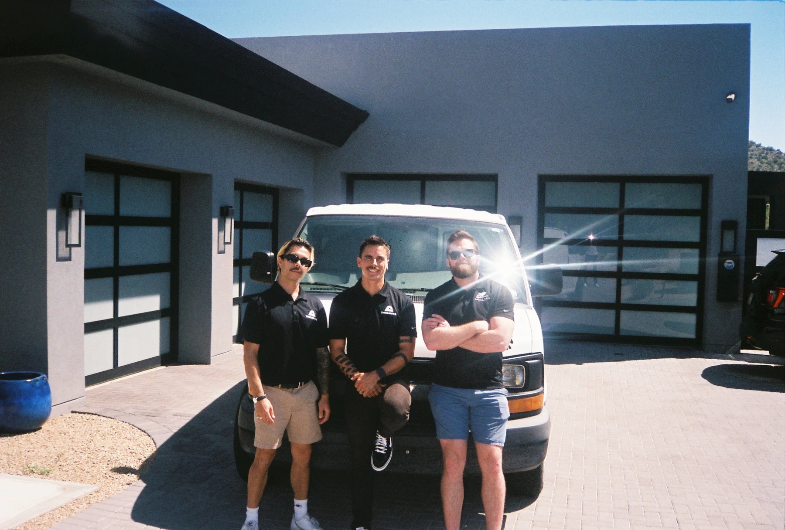
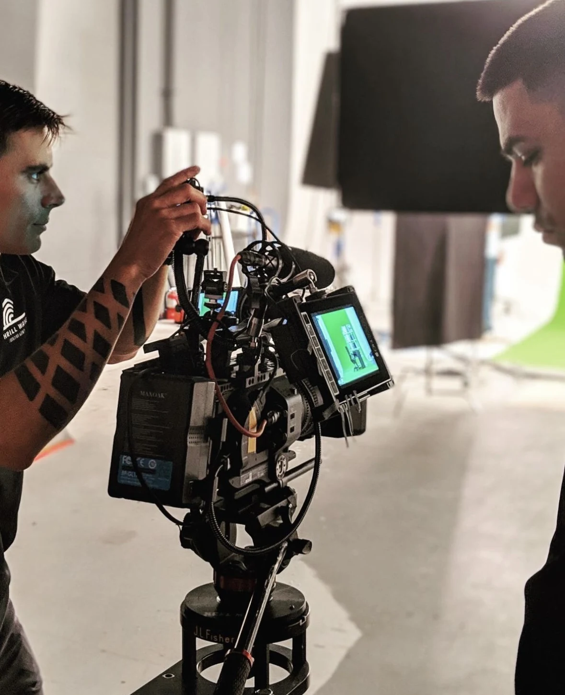
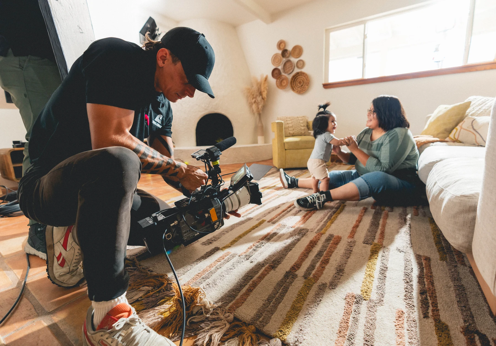

Made on gut instinct
No audience data, no competitive analysis, no validation.
We analyze your organization, your audience, and your competitive landscape before we pick up a camera. The research tells us which story to produce. Then we go film it.
Book a call →Ingest. Synthesize. Execute.
Every engagement starts with a SITREP.
No audience data, no competitive analysis, no validation.
Didn't study what problem theirs solved or whether your audience cares.
Started with the solution before defining the problem. Looked good, moved no one.
Sat on a server. Nobody planned who needed to see it or how.
Organizations with something real at stake. Complex missions, reputational pressure, stories they don't know how to tell. Underserved by vendors with cameras and no strategic thinking.


Client case study - ITCA (Inter Tribal Council of Arizona). Three separate campaigns, one process. Each required pre-production research that changed the creative direction. We knew what to make before we picked up a camera. That's the SITREP.
ITCA needed to increase WIC enrollment. Participation declining despite eligible families.
Tribal members associated WIC with government surveillance. Barrier was trust, not awareness.
Tribal mothers speaking direct to camera. No narration. No institutional framing.
Vaccine education for communities with justified skepticism of government health programs.
Standard messaging was counterproductive. Needed own leaders, not outside authorities.
Tribal health directors and community members in their own words. Shot on location.
10-part docu-series to drive tribal voter participation ahead of 2026 election.
Disengagement wasn't apathy — rational response to broken promises. Had to confront that history first.
“Your Voice, Your Power.” Ten episodes. Tribal leaders, elders, young voters. In production.
SITREP formulated a plan, and we executed. See the process in action, and why we shot "oners" for this entire PSA campaign.

▶What opportunities you are missing + what working with us looks like.
Message us →